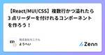
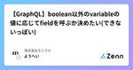

株式会社モニクルのフィード
https://zenn.dev/p/monicle
モニクルは、金融サービステック企業です。 金融の専門知識がなくても、正しい意思決定ができる社会へ。 そのために必要なのは、人によるサービスとテクノロジーの掛け合わせ。 既存のフィンテックとは異なる挑戦に取り組みます。
フィード
Rails の非同期処理を Sidekiq から Cloud Tasks にリプレイスして Cloud Run のコストが6分の1になった話 59
59
株式会社モニクルのフィード
成果最終的に、Cloud Run のコストが$6/day前後から$1/day前後に！ちなみに、Cloud Tasks は1ヶ月あたり最初の100万回のオペレーションまで無料なので余裕で収まっています。 モチベーション今回リプレイスを検討したシステムは軽量な非同期処理が大半で、もともと絶対に Sidekiq でないと困るということが少なかったSidekiq は Redis をポーリングしてジョブを取得する方式なので、Cloud Run で実行するには min-instances を1以上にしなければいけない何もジョブがない状態が続いてインスタンスが0になると起こして...
8日前

【React/MUI/CSS】複数行かつ溢れたら3 点リーダーを付けれるコンポーネントを作ろう！ 1
株式会社モニクルのフィード
てんてんてん(..., 3点リーダー)をいい感じにしたい！フロントエンドの画面表示を実装していて、「数行(コンポーネントを使う側から指定)かつ溢れたら3点リーダーを付けれるコンポーネント」を実装したくなることがあるかと思います。この記事ではそのやり方をメモ程度にまとめていきます。 具体的なUIこちらは実装後のStorybookのキャプチャです。 どうやるの？実際のコードは？React, MUIを用いて.tsxに実装する場合の一例を残しておきます。MUIでなくても、コードを適宜修正すればchakraなどでも大体同じようにして使えるはず！追記：chakraにはnoOf...
10日前

【GraphQL】boolean以外のvariableの値に応じてfieldを呼ぶか決めたい(できないっぽい)
株式会社モニクルのフィード
頭出しGraphQL APIをバックエンドにしているフロントエンドアプリケーションを開発する際は、gqlリテラルをよく書くかと思います。普通のユースケースであれば、fieldを書いてcodegen!ってやっていれば特段問題ないかと思います。ですが、まれに「variableの値に応じてfieldを呼ぶか決めたい」ケースがあるかと思います。このvariableがboolean型であれば特に問題ありません。GraphQLではDirectivesがサポートされていて、こんな感じ↓でboolの値をfieldの前(この例で言うとfriendsの@includeの後)につけてあげればOK...
13日前

Cloudflareスタックをモリモリ使ってアバター画像生成サービスを作った話
株式会社モニクルのフィード
Cloudflare Workersを中心とした、Cloudflareの開発者向け製品群（いわゆるCloudflareスタック）は、今やそれだけでちょっとしたサービスを生み出すことが不可能ではなくなってきています。今回、システム構成をCloudflareスタックにほぼ全振りした新サービスをお仕事で作ったので、工夫した点を紹介します。なお、本記事で紹介するサービスは7月4日に正式リリースしたばかりで、本格的なトラフィックをほとんど経験していない状態でこの記事を書き始めています。2ヶ月ほど運用した後での生の声は、8月25日に新潟で行われる、Cloudflare Meetup Niigat...
15日前
【TS】毎回忘れる||と??の違い
株式会社モニクルのフィード
そうです。毎回忘れます。そろそろちゃんと覚えたい。なので情報をまとめておきます。 ?? とはNullish coalescing operatorと呼ばれるもの。用例：const foo = null ?? 'default string';nullとundefinedの時だけ??の右の値になる。 coalesce とは？「coalesce」とは、異なる要素が結合して一つにまとまる、あるいは一体化することを意味する英単語 || とはLogical ORと呼ばれるもの。用例：const value = x || yJSの世界でfalsyな値であれば||の右の値...
22日前
【TS】enumの値のunion型が欲しい！
株式会社モニクルのフィード
悩みenumの値を関数の引数にしつつ、その関数を呼び出す側はenumの値を文字列として直接指定したいときはどうするんだろう？ これじゃダメだったenum Currency { JPY = '日本円', USD = 'ドル', EUR = 'ユーロ'}const sampleFunc = (val: Currency) => { return val}sampleFunc(Currency.JPY) // OKsampleFunc('日本円') // NG関数の引数に直接Enumの型を指定すると、関数の呼び出し元の引数にenumの値を...
22日前
mise + RubyMine 設定メモ（2024年7月時点）
株式会社モニクルのフィード
nodenv, rbenv から mise に移行しました。https://mise.jdx.dev/TypeScript は VSCode で書くのですが特に問題はなし。一方で Ruby/Rails は RubyMine で書くのですが mise に移行してちょっと設定が必要だったのでメモを残しておきます。RubyMine 2024.1 から mise が公式にサポートされています。https://blog.jetbrains.com/ruby/2024/04/rubymine-2024-1-is-out/#support-for-the-mise-version-manage...
1ヶ月前
解像度とフォーマット対応状況の両方に配慮してWebP画像やAVIF画像を扱う
株式会社モニクルのフィード
こんにちは、Webサイト作ってますか？ Webサイトを作っていると、Lighthouseスコアを上げるために画像のサイズやフォーマットにも気を配りたくなりますよね。筆者は画像のフォーマットにはあまり頓着してこなかったので、「フラットな画像ならPNG」「込み入ったイラストはJPEG」「なんかWebPとかいうのもあるらしいけどよくわからん」くらいの解像度で適当に使っていました。しかし、最近の開発でLighthouseスコアのチューニングをしてみたところ、色々新しい知見が溜まったので、自分用の備忘録として残しておこうと思います。 3行まとめちゃんと複数の解像度の画像を用意しようねW...
2ヶ月前
Remix on Cloudflare Pagesで、@vercel/ogを使ってOGP画像を生成する
株式会社モニクルのフィード
こんにちは、Webサイト作ってますか？ Webサイトを作ってると、SNSやSlackにURLが貼られた時の見栄えを良くするために、OGP画像（og:image）を設定したくなりますよね。筆者はCloudflare PagesとRemixでサイトを作ることが多くなってきたのですが、OGP画像を動的に生成する上手い方法を調べていたら一定の成果が出たので、共有しておこうと思います。要点としては次のとおりです。Cloudflare Pages向けの @vercel/og ラッパーを使うできたらURLの末尾を .png にする（Cloudflareのキャッシュを効かせるため） Ve...
2ヶ月前
Node.jsのモジュールタイプごとの読み込み方法
株式会社モニクルのフィード
はじめにCJSやESMといったモジュールタイプ、先人たちの記事を読み理解したつもりになるが、時間が経つと完全に忘れるということを繰り返している。package.jsonの最低限の設定と、その読み込み方法を簡易的に記載する。これは検証で書いたサンプルコードhttps://github.com/kkznch/sample-dual-package CJSからCJS, ESMを読み込むパッケージ中の .js は、パッケージのpackage.jsonに記載されている type フィールドが commonjs の場合はCJSとして扱われ、 type フィールドが module の場...
2ヶ月前
TSは型推論が楽しい
株式会社モニクルのフィード
今までTSをたくさん書く機会がなかったのですが，最近はTSをたくさん書く機会に恵まれたおかげでTSの型推論に面白さを感じています． TSの型今まではGoを書く機会が多く，たまにTSを書くと型の弱さが気になっていました．例えば，Goで次のようなコードはコンパイルエラーとなります．package maintype A inttype B intfunc foo(a A, b B) {}func main() { var a A = 1 var b B = 2 foo(b, a) // ./prog.go:12:6: cannot use b ...
4ヶ月前
モニクルのSREチーム形成期を振り返って
株式会社モニクルのフィード
はじめにモニクルでSREをしているbeaverjrです。この記事では、私が2023年7月に弊社初の専任SREとして入社してからの経験を振り返り、行ってきたこと、実際に直面した挑戦やそこから得られた学びを共有します。今回は技術的な面ではなく、SREチーム・個人としてどのように成長してきたか、その過程でどのようにSREのイネーブリングの取り組みを進めてきたかに焦点を当てて紹介したいと思います。※イネーブリング：この文章では組織にSREの原則と実践を広め、根付かせることを目指す活動を意味します。 SREチーム立ち上げの背景弊社はエンジニア全員がフルサイクルエンジニアとして活躍...
4ヶ月前
GraphQL のデータソースに microCMS を 使う
株式会社モニクルのフィード
はじめにこの記事では、GraphQL のデータソースに microCMS を利用する方法を書いてみます。GraphQL は BFF として利用するケースも多いですが、GraphQL としては、データがどこから来たのかは重要ではありません。データベースや RESTful API、マイクロサービスから取得するといった選択肢があります。今回は microCMS をデータ取得元にすることを想定し、その構成や構築手順を書いていきます。（以下の図の REST API の部分が mciroCMS になるイメージです。）GraphQL is data source agnostic出典: h...
5ヶ月前
BigQueryのクエリ利用量に上限を設定しよう！TerraformによるGoogle Cloudクォータ管理
株式会社モニクルのフィード
はじめにAWSやGoogle Cloudなどのクラウドサービス上でリソースとコストを効率的に管理するためには、適切なクォータ設定がマストです。例えば、やばい!!!!! 間違ってBigQueryで大量のデータにクエリを実行してしまった!!!!!!!という場合などでも、クォータを適切に設定しておけば、予期しない高額な請求を防ぐことができ、一安心です。この記事では、Terraformを用いてGoogle Cloudのクォータ管理をする方法を、BigQueryの事例を通して説明します。 Google CloudのクォータについてGoogle Cloud コンソールでは、クォー...
6ヶ月前
Next.js(AppRouter)でDynamicFunctionを使ってもCacheHitさせる
株式会社モニクルのフィード
はじめにNext.js(AppRouter)をみなさん上手く扱えていますでしょうか？弊社では現在新規プロダクトで使っているのですが、パフォーマンスが良くないという問題にぶちあたっていました。今回はその解決方法を一部共有したいと思います。前提条件として弊社は以下の環境となっています。next : 14.1.0react : 18.2.0react-dom : 18.2.0typescript : 5.3.3Node.js : 18.17.1デプロイ環境 : Vercel!「一部」という表現は、問題の要因としてsearchParamsもあるのですが、今回はD...
6ヶ月前
Denoの静的サイトジェネレータ`Lume`の紹介
株式会社モニクルのフィード
2023年12月に静的サイトジェネレータであるLumeのバージョン2がリリースされました．私は個人ブログを書くのに GitHub Pages + Lume を利用しているので，年末はLumeのバージョンアップなどの作業をしていたのですが，改めて体験が良いなと思ったのでLumeの紹介をしたいと思います． 前提知識 GitHub PagesGitHub PagesはGitHub社がプロジェクトのプロジェクトのウェブサイトを提供することを目的に，リポジトリに配置してある静的ファイル(HTMLやJSなど)をホスティングしてウェブサイトを公開してくれるサービスです．@a-skuaという...
7ヶ月前
Amazon Connectの電話番号移行：アカウント間でスムーズに進めるためのポイント
株式会社モニクルのフィード
組織再編などで企業やプロジェクトの構造が変化すると、異なるAWSアカウントでサービスを管理する必要が生じることがあり、Amazon Connectの電話番号に関してもアカウント間で移行するシーンがあるかと思います。実際にAmazon Connectの電話番号をアカウント間で移行した際、注意しなければならないと思った点を紹介します。 アカウント間での電話番号移行下記の公式ドキュメントのAmazon Connectインスタンスが異なるリージョンまたは異なるAWSアカウントにある のセクションにも記載がある通り、アカウント間での移行には移行元と移行先の各アカウントから1つずつ、2つのA...
7ヶ月前
MDNでHTMLを体系的に学んでみた備忘録
株式会社モニクルのフィード
はじめにみなさんはHTMLをどんなサイト・書籍で学んできましたか?私はというと、10年前に当初全て無料で閲覧できていたドットインストールで少しかじり、7年前にWebアプリケーションの開発をする中でプロダクトコードから学んだという具合でした。現在の会社に転職してきて再度フロントエンドの開発もすることになり、思い返してみるとHTMLを体系的に学んでこなかったと思ったので、MDNが公開している「ウェブ開発を学ぶ」をやってみました。この記事ではなるほどなと思った部分を抜粋して紹介したいと思います。 前提知識基本的なことから理解を進めようと思っていたので、まずは「ウェブ入門」から...
7ヶ月前
そのままでは動かない Vercel 公式サンプル Node.js Serverless Functions を動かす
株式会社モニクルのフィード
フロントエンドはいらなくてシンプルな Node.js だけを動かしたい。であれば、Vercel の Serverless Functions だけ使うのも良いかもな〜と思い、Vercel 公式サンプルhttps://vercel.com/templates/other/nodejs-serverless-function-expressを動かしたかったんですが、2024-01-12 時点でそのままでは動かなかったので備忘録です。$ ghq get https://github.com/vercel/examples$ cd $HOME/dev/src/github.com/ver...
7ヶ月前
Cloudflare Workers プロジェクト作成から GitHub Actions 自動デプロイまで最速でやる
株式会社モニクルのフィード
Cloudflare の公式ドキュメントはこちら。https://developers.cloudflare.com/workers/wrangler/ci-cd/公式ドキュメントのとおりにやれば良いだけの話ではあるのですが、「よーし、なんか作るぞー」と思ってから、表題のとおりプロジェクト作成から main ブランチにプッシュされたら（実際のお仕事では main ブランチに直接プッシュはしないので PR が main ブランチにマージされたら）GitHub Actions で自動デプロイされるまでの環境構築を、あまり頭を使わずにシュッとやりたいのでまとめました。Cloudflar...
7ヶ月前